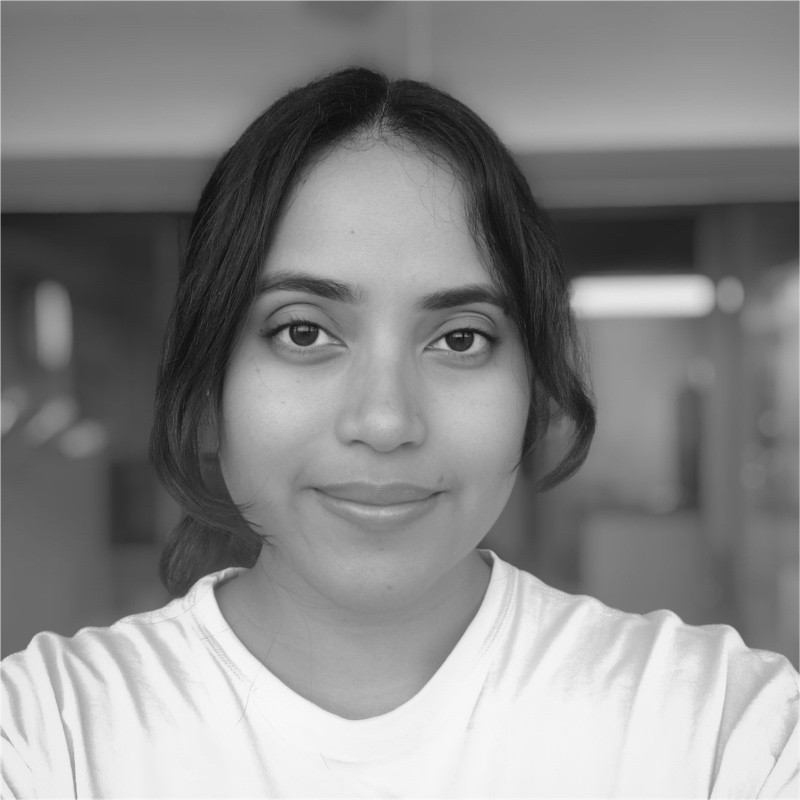

Software engineer specializing in real-time modular solutions and large-scale LLM workflows. Experience in designing production-ready AI systems through my work at Palantir, SMX, and Deloitte.
I design resilient, scalable systems where software engineering meets machine learning. My goal is to enhance human-AI collaboration by striking the right balance between automation and human expertise.
Looking for software engineering roles with high growth potential and meaningful impact. Excited to work with AI, distributed systems, and cloud-native architectures to solve real-world challenges.
Thanks for visiting! Feel free to reach out at pnat614@gmail.com if you'd like to connect.